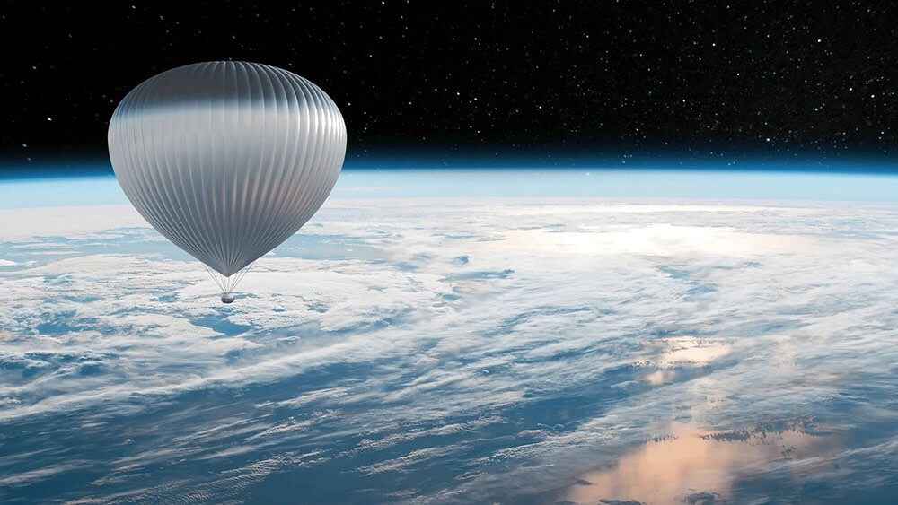
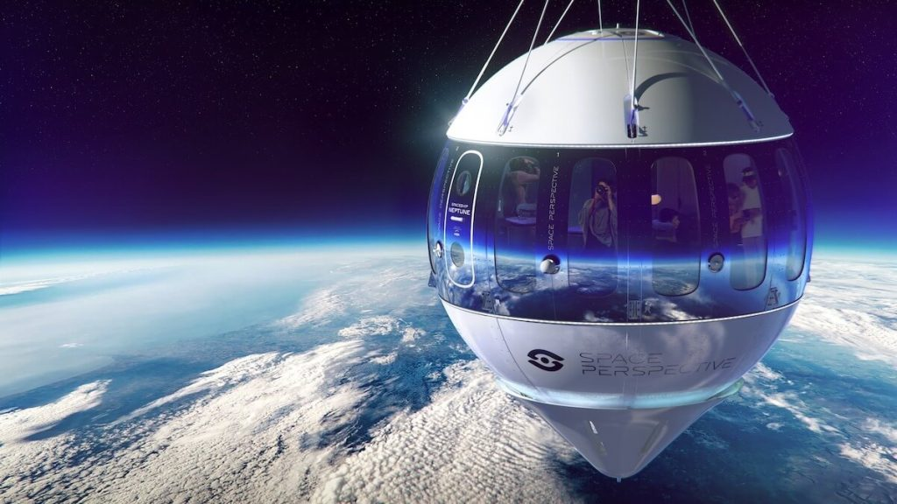
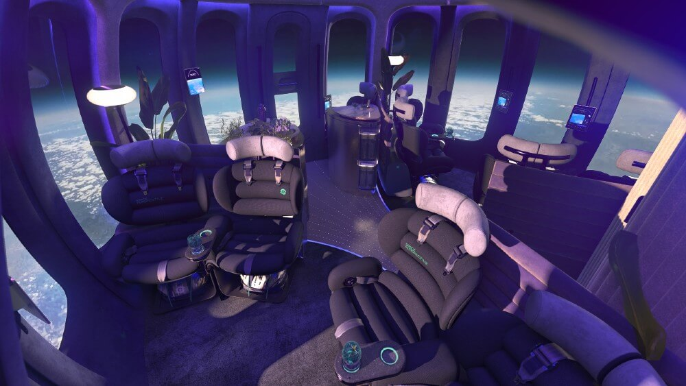
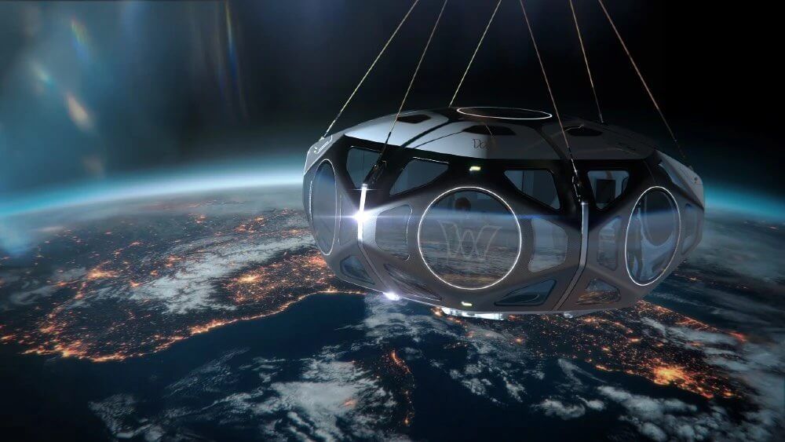

ဒီကုမ္ပဏီ တွေဟာ ကမ္ဘာ့လေထု အပေါ်လွှာ စထရာတို စဖီးယား အလွှာထဲကို ဇိမ်ခံ မိုးပျံပူပေါင်း ကြီးတွေ အသုံးပြုပြီး ခရီးသွားများကို ပို့ဆောင်မှာ ဖြစ်ပါတယ်။ ဒီ ဇိမ်ခံ မိုးပျံပူပေါင်း တွေမှာ ဖိအားသွင်း လေလုံခန်းတွေ ချိတ်ဆွဲပြီး သက်တောင့်သက်သာ ပို့ဆောင်ပေးမှာ ဖြစ်ပါတယ်။ ဒီ လေလုံခန်း တွေအတွင်းမှာ အိမ်သာ၊ ဘား နဲ့ ဝိုင်ဖိုင်စနစ်တွေကိုလဲ တပ်ဆင် ပေးထားမယ်လို့ သိရပါတယ်။
ဒီနည်းနဲ့ ပို့ဆောင်ခြင်းဟာ အသက်အရွယ် စုံအတွက် သက်တောင့်သက်သာ အန္တရာယ်ကင်းကင်း ပို့ဆောင်ပေးနိုင်မယ့် နည်းလမ်း ဖြစ်ပါတယ်။ ဒုံးပျံနဲ့ ပို့ဆောင်မှုမှာလို တုန်ခါမှုတွေ၊ ပေါက်ကွဲနိုင်တဲ့ အန္တရာယ် တွေလဲ မရှိပါဘူး။ ကျယ်ဝန်းတဲ့ အခန်းအတွင်း ညင်ညင်သာသာ ငြိမ်ငြိမ့်ညောင်းညောင်းလေး တက်သွားနိုင်မှာ ဖြစ်ပါတယ်။

အခု မိုးပျံပူပေါင်း ကတော့ ညင်ညင်သာသာ နဲ့ တက်သွားမှာ ဖြစ်ပြီး လေထု အမြင့်ပိုင်း မှာလဲ နာရီနဲ့ ချီအောင် အေးအေး ဆေးဆေး ဖျော်ရည်လေး သောက်ပြီး သက်တောင့်သက်သာနဲ့ ရှုခင်းတွေ ကြည့်ရှုနိုင်မှာ ဖြစ်ပါတယ်။
ဒီ အာကာသ မိုးပျံပူပေါင်း ခရီးသွားလုပ်ငန်းကို စီစဉ်နေကြတဲ့ ကုမ္ပဏီတွေရဲ့ အဆိုအရ ခရီးစဉ် တစ်ခုလုံး ကြာမြင့်ချိန်ဟာ ၆ နာရီလောက် ကြာမြင့်မှာ ဖြစ်ပြီး ခရီးသည်တွေကို ကမ္ဘာမြေပြင် အထက် ၁၅ မိုင်ကနေ မိုင် ၂၀ အမြင့်အထိ ခရီးသည်တွေကို ပို့ဆောင် ပေးနိုင်မှာ ဖြစ်ပါတယ်။ ဒီအမြင့်မှာ လေထုဟာ အလွန် ပါးသွားပြီမို့ နက်မှောင်နေတဲ့ ကောင်းကင်ကို နေ့အချိန်တောင် ထင်ထင်ရှားရှား မြင်ကြရမှာ ဖြစ်ပါတယ်။
ဒါ့အပြင် ဒီအမြင့်မှာ ကမ္ဘာကြီး ခုံးနေတာ ကိုလဲ မြင်ကြရမှာ ဖြစ်ပြီး အပြာရောင် လေထုလွှာ နယ်နိမိတ် ကွေးလေးကိုတောင် မြင်တွေ့နိုင်မှာ ဖြစ်ပါတယ်။
ပြင်သစ်အခြေစိုက် Zephalto ကုမ္ပဏီဟာ လာမယ့် ၂၀၂၄ မှာ ပထမဆုံး အာကာသ မိုးပျံပူပေါင်းကို လွှတ်တင်တော့မှာ ဖြစ်ပါတယ်။ ခရီးသွား တစ်ယောက်ကို အမေရိကန် ဒေါ်လာ ၁၃၂,၀၀၀ ကျသင့်မှာမို့ လက်ရှိ လွန်းပျံယာဉ်နဲ့ အာကာသထဲ ၂ မိနစ်ခန့် တက်ဖို့ ကုန်ကျစားရိတ်ထက်တော့ အများကြီး သက်သာနေပါတယ်။

ဒီ မိုးပျံပူပေါင်းဟာ ခရီးသည် တွေကို အမြင့် မိုင် ၁၅.၅ မိုင် အမြင့်ကို သယ်ဆောင်သွားမှာ ဖြစ်ပါတယ်။ ဒီ မိုးပျံပူပေါင်း တွေကို ဥရောပ လေကြောင်း လုံခြုံရေး အေဂျင်စီ (European Aviation Safety Agency) ကနေ ခရီးသည် ပို့ဆောင်ရေး လေယာဉ် အနေနဲ့ မှတ်ပုံတင် ထုတ်ပေးသွားမယ်လို့ သိရပါတယ်။

ဒီလို အာကာသ မိုးပျံပူပေါင်း ခရီးစဉ် ပြေးဆွဲဖို့ စီစဉ်နေတာဟာ Zephalto ကုမ္ပဏီ တစ်ခုထဲတော့ မဟုတ်ပါဘူး။ အမေရိကန် နိုင်ငံ ကနေဒီ အာကာသ စခန်း (Kennedy Space Center) မှာ အခြေစိုက်တဲ့ Space Perspective ကလဲ ခရီးသည် တစ်ဦးကို ဒေါ်လာ ၁၂၅,၀၀၀ နဲ့ ကမ္ဘာမြေပြင်အထက် မိုင် ၂၀ အမြင့်အထိ မိုးပျံပူပေါင်းနဲ့ ပို့ဆောင်ပေးဖို့ စီစဉ်နေပါတယ်။

ဒီလို သင်္ဘောကတေ အခြေပြု ပျံသန်းတဲ့ အတွက် အားသာချက်ကတော့ ကမ္ဘာတဝန်း လှည့်ပတ်ပြီး အာကာသ မိုးပျံပူပေါင်း ခရီးစဉ် တွေကို လွှတ်တင် နိုင်မှာပဲ ဖြစ်ပါတယ်။ ကုမ္ပဏီကတော့ နှစ်စဉ် ခရီးစဉ် ရာချီ လွှတ်တင်နိုင်မယ်လို့ မှန်းဆ ထားပါတယ်။ ကုမ္ပဏီရဲ့ အဆိုအရတော့ အခုအချိန်ထိ ခရီးစဉ် လက်မှတ်ပေါင်း ၁,၂၀၀ ကျော် ကြိုတင် ရောင်းချထားပြီး ဖြစ်တယ်လို့ ဆိုပါတယ်။
အမေရိကန် ပြည်ထောင်စု အရီဇိုးနား အခြေစိုက် World View ကုမ္ပဏီ ကလဲ ခရီးသည် တစ်ဦးကို ဒေါ်လာ ၅၀,၀၀၀ နဲ့ အာကာသ စပ်ကြား ခရီးစဉ် တွေကို စီစဉ်နေပါတယ်။ ၅ ရက်ကြာမယ့် ဒီ ခရီးစဉ်မှာ ဟီလီယံ မိုးပျံပူပေါင်းနဲ့ အမြင့် မိုင် ၂၀ အထိ ပို့ဆောင်ပေးမှာ ဖြစ်ပါတယ်။
မိုင် ၂၀ ဆိုတဲ့ အမြင့်ဟာ လက်ရှိ ခရီးသည်တင် လေယာဉ်တွေ ပျံသန်းနေတဲ့ အမြင့်ထက် ၃ ဆ လောက် ပိုမြင့်တဲ့ အမြင့် ဖြစ်ပါတယ်။ ဒီအမြင့်ဟာ တရားဝင် အာကာသ နယ်စပ်မျဉ်း ဖြစ်တဲ့ အမြင့် ၆၂ မိုင် မှာရှိတဲ့ Kármán Line ထက်တော့ အများကြီး နိုမ့်နေပါ သေးတယ်။ ဒါပေမယ့်လဲ ဒီအမြင့်ဟာ အာကာသ ထဲက အာကာသ ယာဉ်မှူးတွေ မြင်ရတဲ့ ကမ္ဘာ့မြင်ကွင်းနဲ့ ဆင်ဆင်တူတဲ့ မြင်ကွင်းကိုတော့ ရရှိစေမှာ ဖြစ်ပါတယ်။
Ref: These 3 Space Balloon Companies Want to Send You Into the Stratosphere | Robb Report